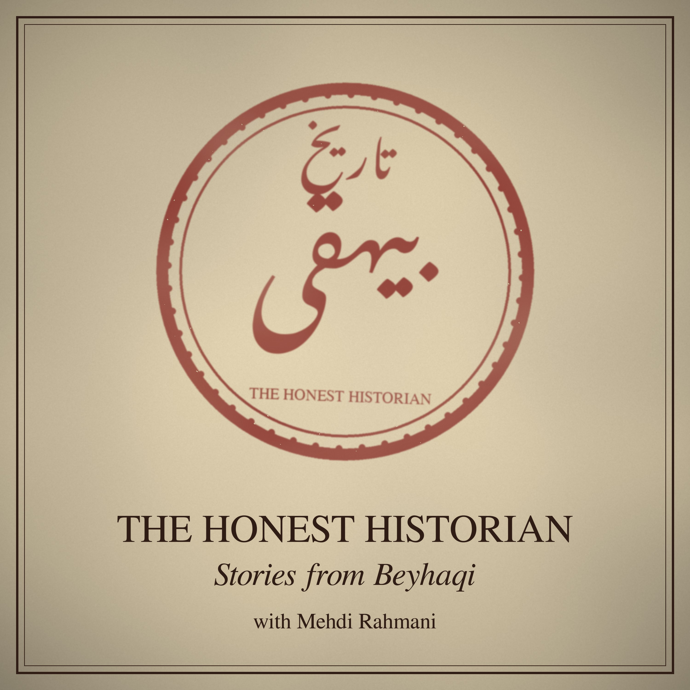

Latest folio
Folio 1: The Vizier on the Gallows
Ghazni, a thousand years ago. Sultan Mahmud is dead, his son Masud takes the throne, and the old vizier Hasanak is about to pay for one careless sentence. Beyhaqi, a young secretary at court, saw it all, and wrote it down years later in one of the most famous passages of Persian prose. A story about pride, revenge, a mother's dignity, and a historian who refused to lie.
| Volume | 1 |
|---|---|
| Folio | 1 |
| Narrator | Mehdi Rahmani |
| Length | 9 min |
| Published | 01 November 2026 |
| Source | Tarikh-e Beyhaqi, the account of Hasanak's execution (Balkh, 422 AH / 1032 CE) |
"I write only what I saw with my own eyes, or heard from someone I trust."
in the spirit of Abolfazl Beyhaqi
All folios
- Folio 1
Folio 1: The Vizier on the Gallows
Ghazni, a thousand years ago. Sultan Mahmud is dead, his son Masud takes the throne, and the old vizier Hasanak is about to pay for one careless sentence. Beyhaqi, a young secretary at court, saw it all, and wrote it down years later in one of the most famous passages of Persian prose. A story about pride, revenge, a mother's dignity, and a historian who refused to lie.
About
A thousand years ago, a court secretary in Ghazni named Abolfazl Beyhaqi wrote down what he saw — kings, viziers, plots and courage — and promised to tell only the truth. Each week, Mehdi Rahmani retells one of his stories in English, straight from the Persian original. Narrated with an AI rendering of Mehdi's own voice.
Subscribe in any podcast app with this RSS feed: https://mehdimrahmani.github.io/kalila-videos/podcast/feed.xml